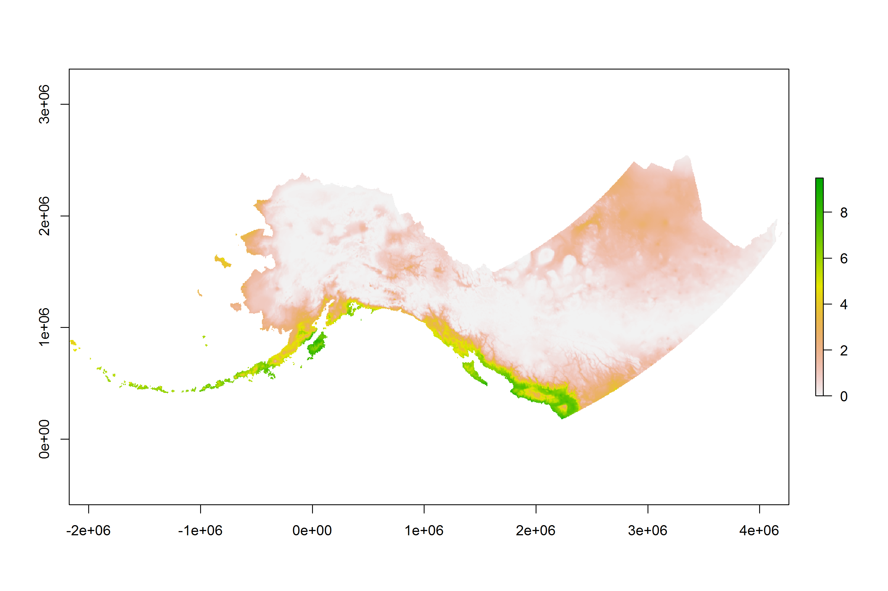
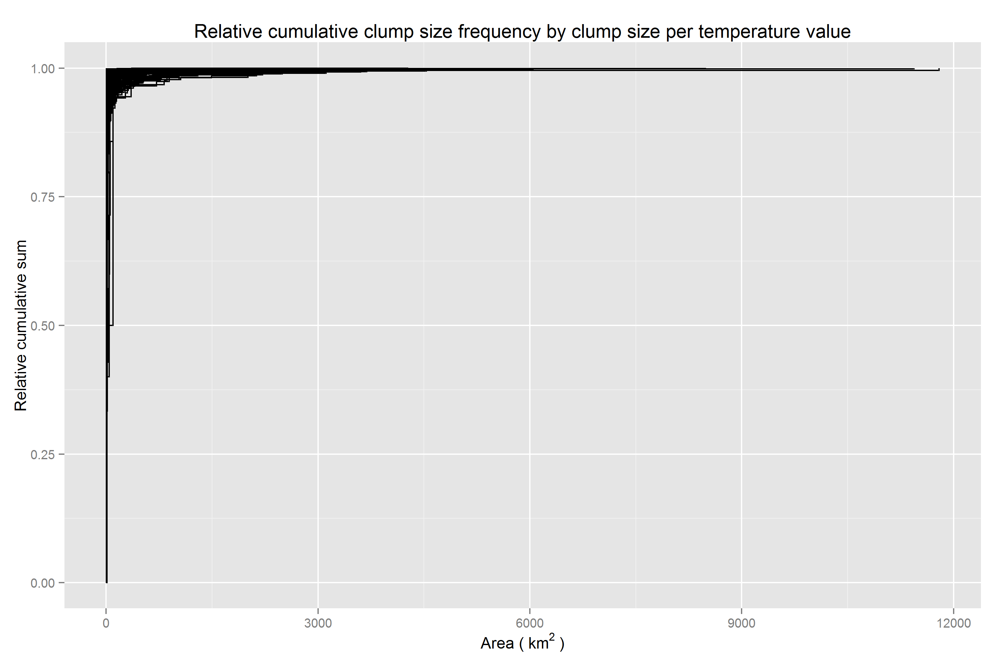
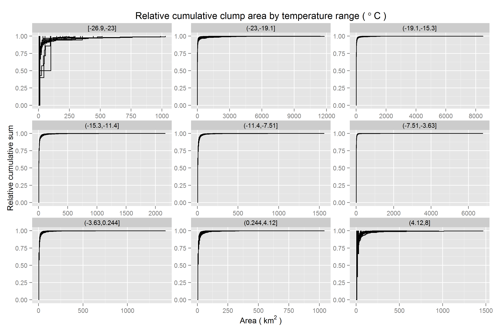
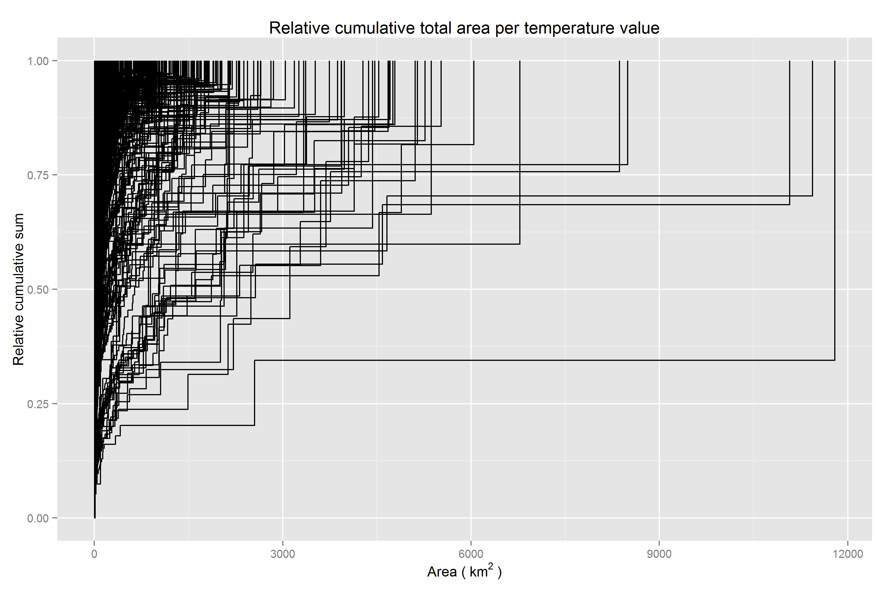
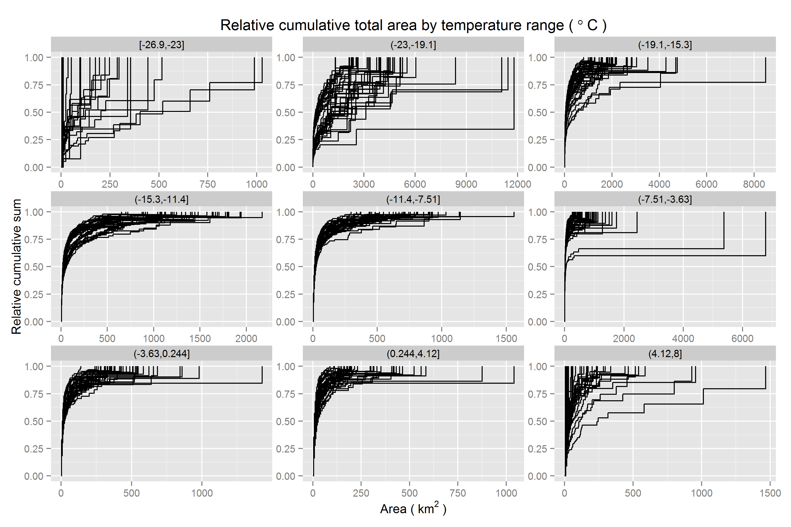
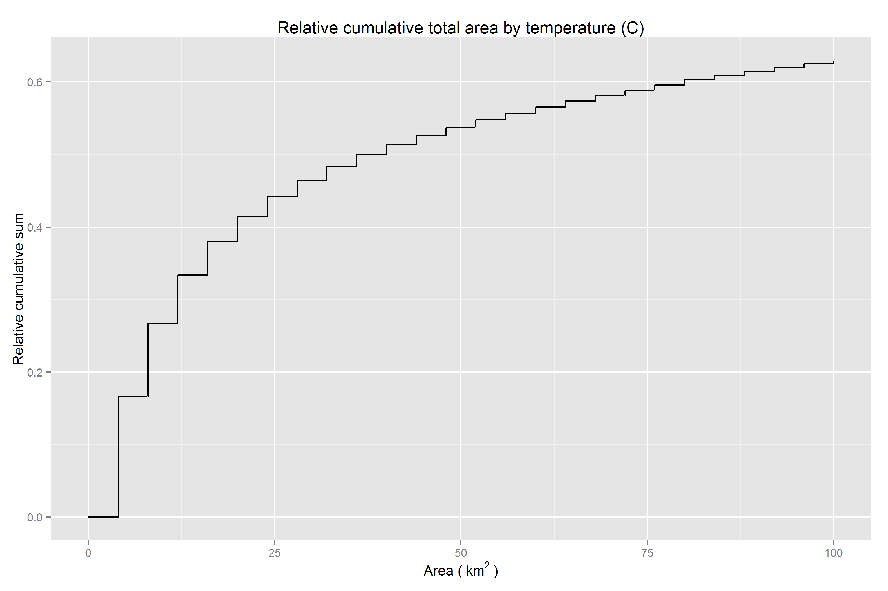

The sp_ac_clump.R script investigates spatial autocorrelation and clump size distributions of climate variables (currently temperature, single example map) in raster data sets.
High-resolution downscaled data sets may contain high, positive spatial autocorrelation. In the case of SNAP’s downscaled, spatially explicit data sets and other subsequently derived spatially explicit data sets like ALFRESCO output maps, it is important to investigate the role of spatial autocorrelation with respect to the data to information ratio.
A cursory look at map layers suggests spatial autocorrelation is high virtually everywhere. Additional considerations include the influence of the underlying high-resolution climatology layer used in downscaling (e.g., PRISM), which in theory forces essentially the same spatial autocorrelation pattern on every map through time when the map time series being downscaled (e.g., CRU or a GCM) exists at an incredibly coarse spatial resolution by comparison.
Furthermore, the combination of (1) a typical range in temperature or precipitation levels over the entire spatial extent in a map layer and (2) the level of precision of the data, ensures that even a map layer containing upwards of a couple million grid cells may be composed of only several hundred unique data values.
Questions of interest include:
## Loading required package: sp
##
## Attaching package: 'raster'
##
## The following object is masked from 'package:rCharts':
##
## addLayer
##
## data.table 1.9.6 For help type ?data.table or https://github.com/Rdatatable/data.table/wiki
## The fastest way to learn (by data.table authors): https://www.datacamp.com/courses/data-analysis-the-data-table-way
##
## Attaching package: 'data.table'
##
## The following object is masked from 'package:raster':
##
## shift
Moran’s I for this example downscaled temperature map layer is 0.986 and Geary’s C, which is inversely related but takes somewhat more into account local autocorrelation, is 8.06928910^{-4}. The map above shows the localized Moran’s I. Note how much of the map is near the global mean, and the geographic regions which have temperature values far from the mean in either direction nevertheless deviate in a coarse fashion with respect to the underlying spatial resolution. Despite having 1410983 grid cells containing data values, there are only 343 unique values in the entire map, making 99.976% of the map redundant. A frequency table of just 343 values would provide a complete description of the probability mass function for the entire unsampled map.
Below are four plots examining spatial clump sizes by unique temperature values in the map. Clumping is typically reserved for discrete data, but considering the precision of the data and range of sensible values over the extent for the given variable, it is sensible to treat these numeric values as discrete.
Unsurprisingly, most clumps are small to moderate, but outliers across a range of unique temperature values are extreme, one value (to the nearest 0.1 degrees Celsius) occurring in a clump roughly 1.210^{4} square km in size.

When conditioned on temperature classes, there is little change. The key difference is trivial. Extreme values are relatively rare. Therefore, extremely large outliers in clump size are not possible. Note the shorter range on the x-axis for the coldest and hottest temperature classes. This is what makes it easier to see curves (step functions) indicating temperature values in the map which have more clumps of larger sizes - steep steps do not occur quite as early in the curve - although this happens across the full range of temperatures.

Looking at the cumulative coverage area by clump size for each unique temperature curve, certainly there is a fair amount of ink to the right of zero. While the extremely large clumps, though rare, are certainly demanding of further investigation, the darkened regions slightly to the right of zero are of interest for how they may inform a decision to sptailly aggregate the data prior to use in analyses.

Faceting the previous plot by temperature class, cumulative coverage area by clump size continues to be easier to parse visually, since it is not as susceptible to outliers in the form of either large frequencies of small clumps or the occasional very large clump. Coverage area represents an integration across clump size frequencies and individual clump sizes.

In the plot below, the marginal distribution of map coverage area by clump size is shown after integrating across all temperature values. The x-axis is cropped at 100 square km to provide more of a zoomed in view relative to the previous plots since the curve asymptotes fairly quickly thereafter.

Half of the map is filled in by values occurring in clumps greater than 36 square km. 83.3% of data values in the map occur among clumps of identically valued cells while 16.7% of values appear in isolation.